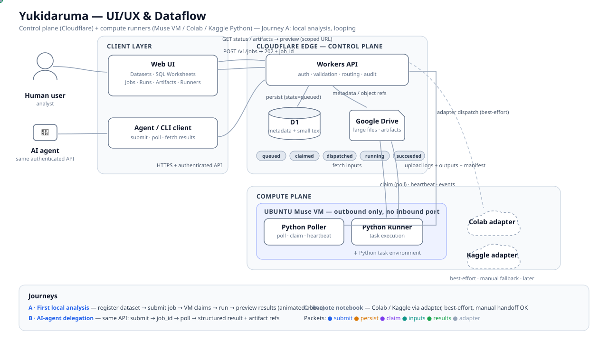

JOURNEY A
First local analysis (animated)
- Analyst registers a dataset and creates a Python job or SQL worksheet in the Web UI.
- Workers API validates and persists the job in D1 as queued; UI gets 202 + job_id.
- The Muse VM Python worker polls and claims the job, then resolves inputs from D1 or Google Drive.
- Python executes; small text outputs go to D1 and larger artifacts go to Google Drive.
- Job state walks queued → claimed → dispatched → running → succeeded; UI previews results through the authenticated Workers API.
JOURNEY B
AI-agent delegation
Agents use the same authenticated API as humans — no direct database access. Submit task + input references + constraints, receive a job_id, poll status (or receive an event), then read a structured result summary and artifact references.
JOURNEY C
Remote notebook execution (later)
Colab / Kaggle are Python execution targets using the same job contract; unattended automation remains best-effort. An adapter is not shown as available until it passes an end-to-end test; a manual handoff is an acceptable first implementation. Muse VM uses outbound Python polling; no Go orchestrator or inbound port is required.